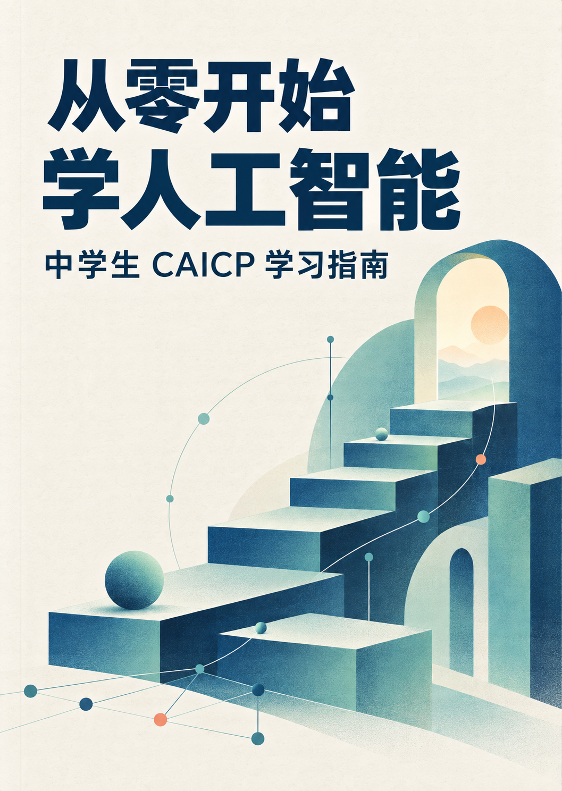

一本写给中学生的人工智能入门书
从零开始
学人工智能中学生 CAICP 学习指南
从第一行 Python，到理解机器怎样学习。
把人工智能的基础知识，一步一步讲清楚。
公开试读版 v0.9 · 免费阅读 · PDF 289 页

从基础出发，走近人工智能。关于这本书
从“会使用”，走向“能理解”。
人工智能已经进入日常生活。它怎样识别图片，怎样从数据中发现规律，又为什么会给出错误的答案？理解这些问题，需要一点编程、一点数学，也需要把零散的知识连起来。
这本书起于给初一孩子辅导 CAICP 时的一个困难：有大纲和样题，却缺少适合中学生从头学习的配套教材。全书从基础概念讲起，逐步介绍算法、机器学习与常见模型，配有插图、Python 示例和章末思考题，供学生自学，也供家长与老师参考。
读一读前言 →全书目录
八章，循序展开。
可以从第一章读起，也可以回到需要的地方。
认识人工智能
从数据、算法与算力开始，认识人工智能能做什么，也理解它的局限。
用 Python 编写程序
变量、条件、循环、函数与程序调试，逐步写出能解决问题的 Python 程序。
理解 AI 所需的数学基础
逻辑、统计、方程、函数、向量和概率，为理解模型打下数学基础。
用算法解决问题
从枚举、查找和排序，到树、图与搜索，学习把问题变成可以执行的步骤。
让机器从数据中学习
认识学习任务、数据预处理、训练与评估，走过一个机器学习项目的基本过程。
理解常见模型的工作原理
从回归和分类，到神经网络、梯度下降与卷积，理解模型内部的工作方式。
用 Python 处理数据与训练模型
使用 NumPy、Pandas、Matplotlib 和 scikit-learn，把知识落实到数据与程序中。
了解人工智能的前沿与应用
走近大模型、智能体与人工智能应用，讨论技术的发展及其影响。
查阅、练习与回顾
大纲对应表 · 术语与符号 · 分级阅读路线 · E / J / S 原创模拟题及解析
配套资料
边读，边动手。
示例代码按章节整理。完整书稿和插图源文件也已公开，欢迎一起修订。
关于作者 陈峥，电子科技大学信息与软件工程学院副教授，长期从事人工智能与自然语言处理相关课程教学。
CAICP 是 IOAI（国际人工智能奥林匹克）中国区面向中小学生开展的人工智能能力认证活动。本书依据编写时的 2025 年资料独立编写，并非官方指定教材；认证要求以官方最新公布为准。
正文、原创插图及模拟题允许在署名、注明修改并遵守相同许可的前提下非商业分享与改编；独立示例代码与随附示例数据采用 MIT 许可。查看使用许可。